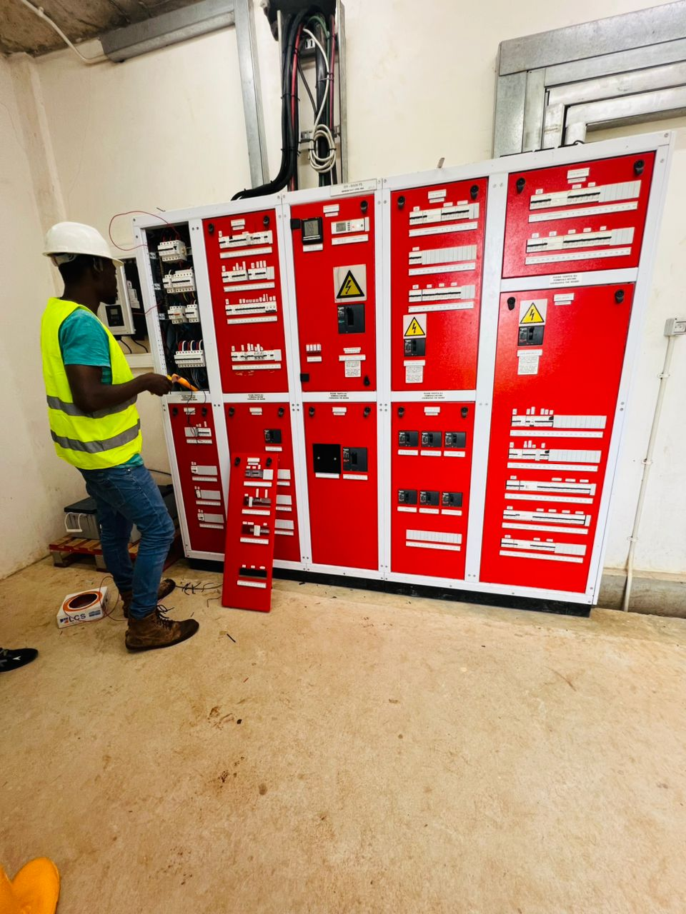
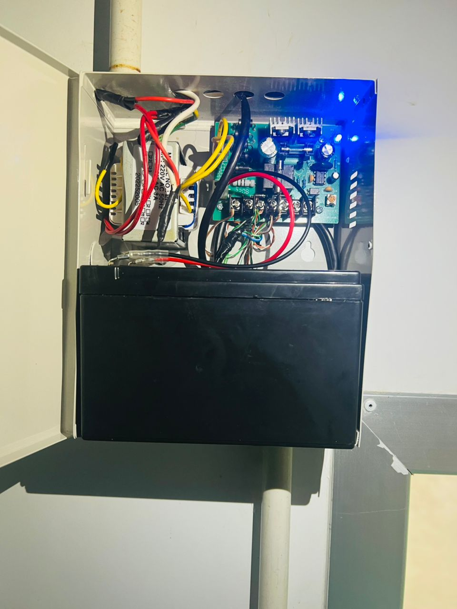
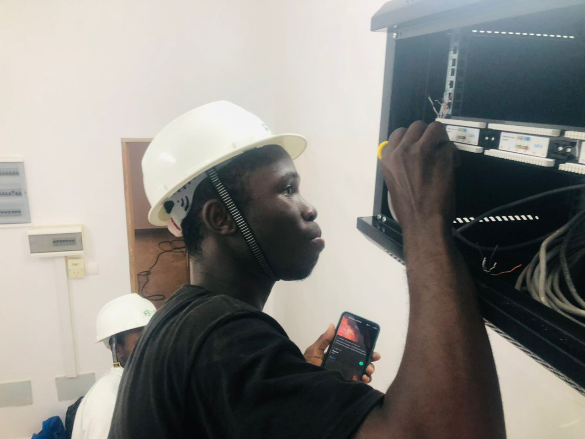

Contexte du projet
Ce projet s’inscrit dans un environnement technique nécessitant la mise en place d’équipements réseau, de dispositifs de sécurité et de systèmes de supervision. L’objectif était de garantir une infrastructure fonctionnelle, propre et fiable.
Problématique
Comment installer, organiser et sécuriser une infrastructure composée de caméras, d’équipements réseau, de coffrets électriques, d’alimentations et de dispositifs de contrôle, tout en assurant une exploitation simple et durable ?
Objectifs
- Installer et raccorder les équipements réseau.
- Mettre en place un système de vidéosurveillance fonctionnel.
- Organiser les câbles et les connexions dans une baie ou un coffret.
- Vérifier l’alimentation électrique et la continuité des équipements.
- Contribuer à la sécurisation physique et numérique de l’installation.
Interventions réalisées
Les travaux ont porté sur l’installation physique des équipements, le raccordement, les tests de fonctionnement et la vérification des connexions. Une attention particulière a été portée à la propreté de l’installation, à la lisibilité du câblage et à la fiabilité du système.
- Installation et vérification de caméras de surveillance.
- Intervention sur baie réseau et équipements de communication.
- Raccordement de câbles et vérification des points de connexion.
- Contrôle d’alimentation et tests de fonctionnement.
- Observation des bonnes pratiques de sécurité sur site.
Compétences mobilisées
Ce projet a permis de mobiliser des compétences transversales en réseaux informatiques, systèmes électriques, maintenance, supervision et cybersécurité. Il relie la partie terrain à la logique de sécurisation des infrastructures numériques.
Résultat obtenu
L’installation a permis d’obtenir une infrastructure opérationnelle, mieux organisée et exploitable. Les équipements peuvent être utilisés pour la surveillance, le contrôle et la gestion sécurisée des accès ou des espaces concernés.
Perspectives d’amélioration
- Ajouter une documentation technique complète de l’installation.
- Mettre en place un plan d’adressage IP structuré.
- Renforcer la segmentation réseau.
- Ajouter une supervision distante des équipements.
- Mettre en place des règles de sécurité plus avancées.


